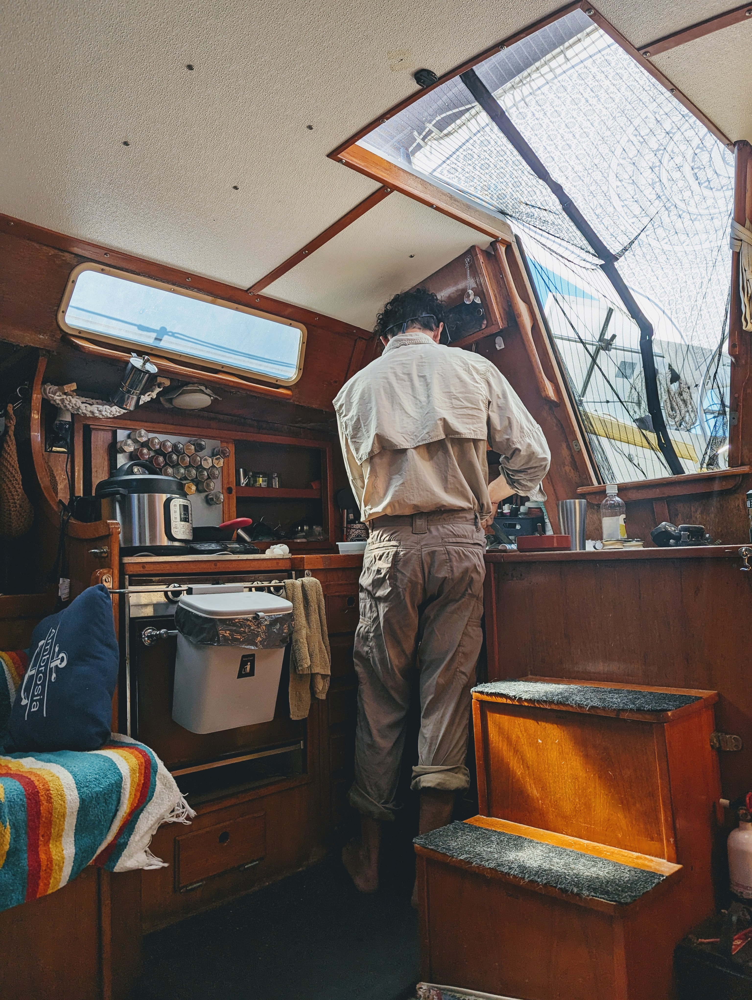
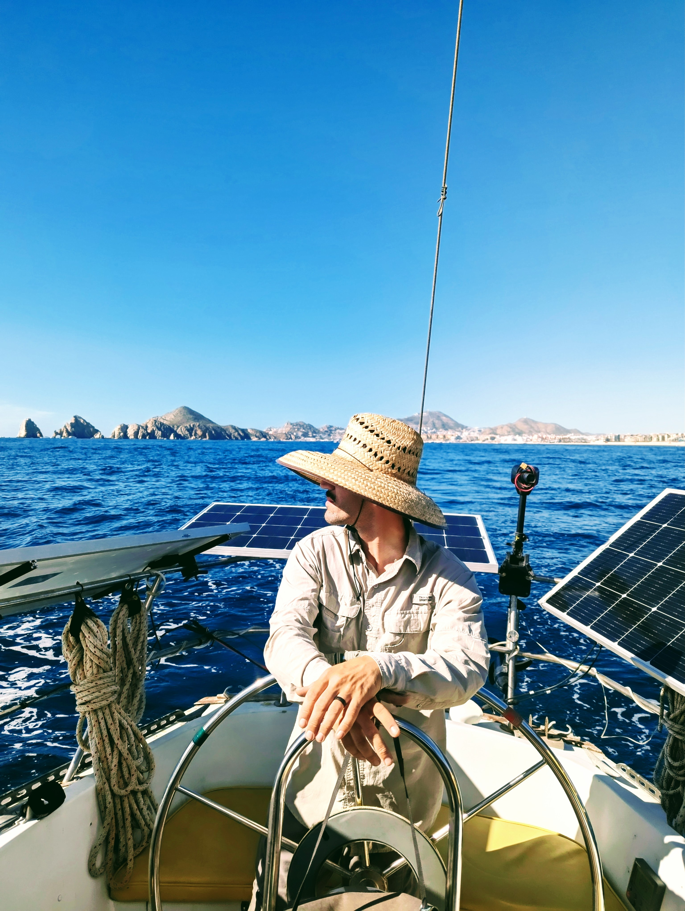
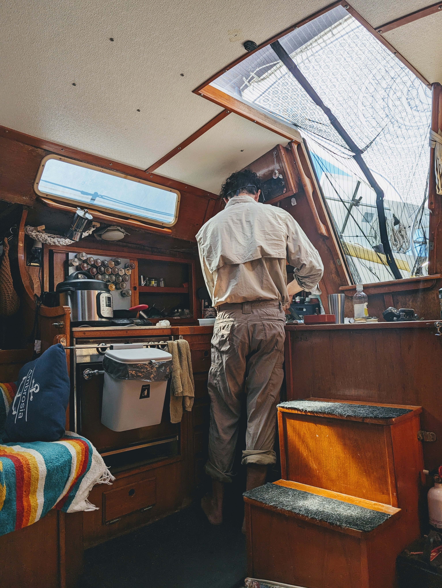
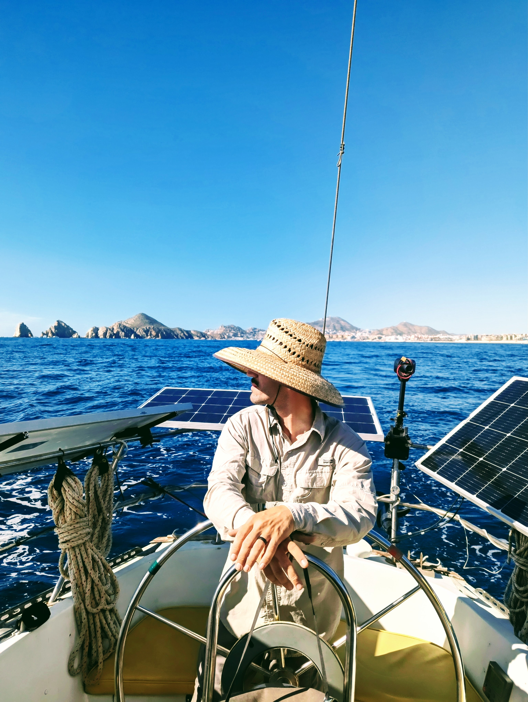

Home
🚧 This site is under construction 🚧
Samantha McDonald is a researcher, educator, and civic advocate. She holds a PhD in Informatics from UC Irvine with expertise in Information Systems, User Experience, Visual Design, and Civic Technology.
Travel
I love traveling and sailing. My partner and I have sailed 9,000+ nautical miles across the Pacific and Atlantic Oceans.
Photo Highlights


 



About

Designed by Andrew Rae
Ph.D. University of California, Irvine
M.S. University of California, Irvine
B.S. University of Maryland, Baltimore County
Languages:
English, Portuguese (Elementary) 🇧🇷, Japanese (Toddler) 🇯🇵 (opens in new tab)
Advocacy:
Founder of the VoteLikeIts2020 (opens in new tab) fundraising campaign for voter equality in America. Former Court Appointed Special Advocate (CASA (opens in new tab)) for the Orange County foster care system for 8 years.
Top Accomplishments:
Walking for 15-days straight in the woods.
Sailing for 15-days straight upwind.
Uncanny resemblance to the Minor Figures oat milk logo.
Purchasing and cooking an ostrich egg.
Eating 25 varieties of cereal on my 25th birthday in a 'milk-madness' bracket showdown.
Questions I have pondered...
Civic Technology 🏛️
- How does the materiality of information technology (opens in new tab) shape citizen engagement and democratic participation?
- What is representation and deliberative democracy and how do we translate those values to technology design (opens in new tab)?
- How does the U.S. Congress use technology to mediate constituent communication (opens in new tab)?
Accessibility ♿
- How do we create tactile aids for the visually impaired (opens in new tab) to obtain a graphic design education?
- What can promote inclusion and education of 3D printing (opens in new tab) in classrooms and physical therapy centers?
Limits To Growth 🌍
- How do we approach the grand challenges of human-computer interaction (opens in new tab), food, and sustainability?
- What is the potential of 3D printing as a future collapse-compliant means of production? (opens in new tab)
Monetization ✏️
- How should we design tools to measure the success of advertising online?
- What can promote good flow and optimization of information presentation in statistical testing procedures?
- How might we design accessible marketing tools for users with little to no statistical knowledge?
Curious to see all my publications? Go to my Google Scholar Page (opens in new tab).
Teaching
-Lecturer-
INST 703, Visual Design Studio
University of Maryland, Baltimore County.
This hands-on studio course helps students develop foundational visual skills related to user experience (UX) design. Students explore methodologies and processes used in many of the industry's top creative environments and study the entire visual design skillset, including concept development, content creation, system design, and tools and process.
INST 201, Introduction to Information Systems
University of Maryland, Baltimore County.
Introduces students to Information Science, with a core focus on exploring theories of Information Technology, and its role in society through writing and critical thinking.
INST 104, Design Across Campus
University of Maryland, Baltimore County.
This course, designed with modules from contributors in UMD programs including Information Studies, Human-Computer Interaction, Graphic Design, Immersive Media Arts, Journalism, Architecture, Landscape Architecture, Engineering, and Policy, will introduce students to the goals and values, approaches, skills, and practices of diverse fields of design.
ICS3, Internet Technologies and Their Social Impact
University of California, Irvine.
Examines current computing technologies and social implications at the individual, group, and societal level. Issues include privacy, trust, identity, reputation, governance, and malicious behavior, ethics, social justice, and culture and community.
-Teaching Assistantships-
ICS5, Global Disruption and Information Technology
University of California, Irvine.
Explores how new forms of information technology (IT) may support transition to a sustainable civilization. Topics include design and implementation of IT systems, science of global change, online community building, and "green IT."
ICS 162W, Organizational Information Systems
University of California, Irvine.
Taught weekly discussion sections.
Introduction to role of information systems in organizations, components and structure of organizational information systems, and techniques used in information systems analysis, design, and implementation.
Beyond
Occasionally I get fired up about policy and write letters advocating for things I believe in, like affordable housing and public recreational access.